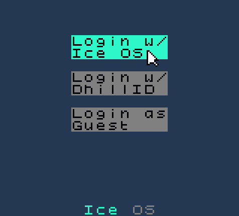
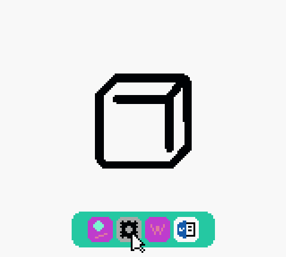

Having trouble logging in as a guest? We're here to help!
Many users may opt to disable Guest logins on their Ice OS system to prevent thieves from making use of their device. An individual that doesn't know a user password being able to access your computer is an inherient risk to those concerned by theft. It's for this reason that releases after Ice OS Finale come with the guest user disabled by default.
To enable Guest logins:
- Login with an Ice OS account that has Administrator privileges.

- Open Settings.
